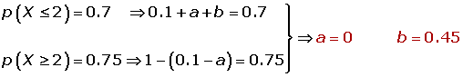

Ejercicios de distribuciones discretas
1Un jugador lanza dos monedas. Gana 1 ó 2 € si aparecen una o dos caras. Por otra parte pierde 5 € si no aparece cara. Determinar la esperanza matemática del juego y si éste es favorable
2Sabiendo que p(X ≤ 2) = 0.7 y p(X ≥ 2) = 0.75. Hallar:
1La esperanza matemática
2La varianza
3La desviación típica
- 1
- 2
Ejercicio 1 resuelto
Un jugador lanza dos monedas. Gana 1 ó 2 € si aparecen una o dos caras. Por otra parte pierde 5 € si no aparece cara. Determinar la esperanza matemática del juego y si éste es favorable.
E = {(c,c);(c,x);(x,c);(x,x)}
p(+1) = 2/4
p(+2) = 1/4
p(−5) = 1/4
μ = 1 · 2/4 + 2 · 1/4 - 5 · 1/4 = −1/4. Es desfavorable
Ejercicio 2 resuelto
Sabiendo que p(X ≤ 2) = 0.7 y p(X ≥ 2) = 0.75. Hallar:
Soluciones:

| x | p i | x · p i | x 2· pi |
|---|---|---|---|
| 0 | 0.1 | 0 | 0 |
| 1 | 0.15 | 0.15 | 0.15 |
| 2 | 0.45 | 0.9 | 1.8 |
| 3 | 0.1 | 0.3 | 0.9 |
| 4 | 0.2 | 0.8 | 3.2 |
| 2.15 | 6.05 |
1La esperanza matemática
μ =2.15
2La varianza
σ² = 6.05 - 2.15² = 1.4275
3La desviación típica
σ = 1.19
 Ejercicios
Ejercicios